Inhalt Index DeskTop Bronstein

 Algebra und Diskrete Mathematik Fuzzy-Logik Verknüpfungen unscharfer Mengen
Algebra und Diskrete Mathematik Fuzzy-Logik Verknüpfungen unscharfer Mengen


Eine Funktion 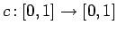 heißt Komplementfunktion, falls sie die folgenden Eigenschaften 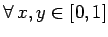 besitzt:
| 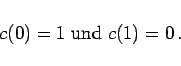 | (5.383a) |
| 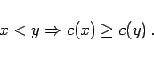 | (5.383b) |
| 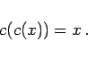 | (5.383c) |
| 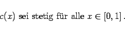 | (5.383d) |
| Beispiel A |
|
Die am häufigsten untersuchte und angewandte Komplementfunktion (intuitive Definition) ist stetig und involutiv: |
| Beispiel B |
|
Andere stetige und involutive Komplemente sind das SUGENO-Komplement 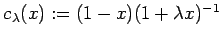 mit 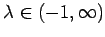 und das YAGER-Komplement 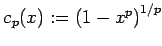 mit 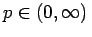. |
| Operator | BOOLEsche Logik | Fuzzy-Logik 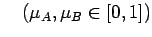 |
| UND | 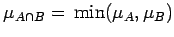 | |
| ODER | 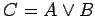 | 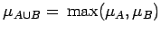 |
| NICHT | 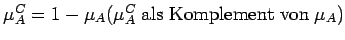 |